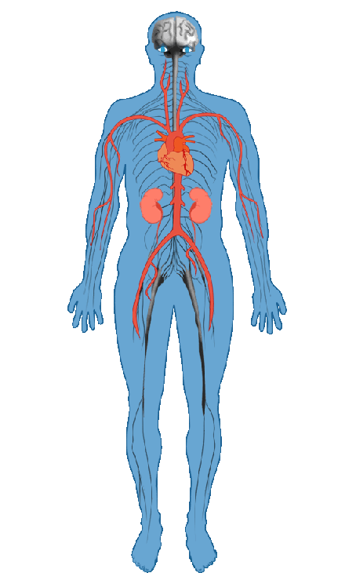

What is diabetes?
|
Diabetes is a chronic condition characterised by high levels of glucose in the blood. These high levels are caused by the pancreas being unable to produce enough insulin, by the body becoming resistant to insulin, or by a combination of the two. Insulin is a hormone made in the pancreas which is released into the blood stream and helps move glucose from the food we eat to our cells for energy.
The cause of diabetes is not fully understood. Though there are known genetic markers, there are possibly a number of factors that trigger the onset of diabetes. Possible triggers include viral infections or similar stresses to the body, which cause the body's "fighting cells" (white blood cells) to attack the beta cells, mistaking them for foreign or harmful cells. Only the beta cells are affected in this very slow process that may take up to eight or nine years. Signs and symptoms of diabetes do not present until about ninety percent of beta calls have been destroyed. |
HbA1c (glycated haemoglobin)
|
|---|
Effects of Diabetes
Many effects of diabetes will only develop after prolonged periods of high levels of blood glucose. Diabetes can lead to major complications including blindness, heart disease, stroke and kidney failure.
The following interactive tool will help explain what diabetes actually is and how it affects different parts of the body
Symptoms of Diabetes
Frequent Urination
Increased Hunger and Thirst
Fatigue
Lack of Interest and Concentration
Blurred Vision
Weight Loss
How your body is affected
Having high blood glucose levels for a long period of time can increase the risk of the following health concerns. Click on a body part to discover more.

Management & Control
Foods |
Healthy eating and a well balanced diet is essential for optimal diabetes control. When planning meals, include foods from each of the following groups. |
|---|---|
Medication |
Scheduled doses of Insulin helps to lower glucose levels. There are two types of insulin, a fast acting insulin that is normally taken around meal times, and a slow acting insulin generally taken before bed. Take your insulin as suggested by your doctor or diabetes educator. Dosage differs from person to person and can depend on your diet. |
Stress |
Stress will cause an increase in blood glucose levels. Being in highly stressful environments may make managing normal levels difficult. Keeping track of stress and closely monitoring the effect it has on glucose levels is important. |
Exercise |
Regular scheduled exercise will help to reduce blood glucose levels, as well as keeping you fit. This is due to your body converting glucose to energy. The longer or more intense the exercise is, the greater the effect it has on lowering glucose levels in the body. |
Planning |
Keeping a regular schedule of all of the above, and sticking to it, is important to keeping blood glucose levels under control. This includes keeping track of levels throughout the day, as well as monitoring stress, foods eaten and exercise times. Planning ahead is also crucial, as unexpected hypoglycaemic events can occur. Small amounts of sweets or sweet drinks can be eaten if the body’s blood glucose level drops unexpectedly low. Alternatively, glucose tablets can be taken. Keeping your hypoglycaemic pack with you during exercise sessions or when going about daily activities helps to account for situations where blood glucose levels need to be quickly brought back up to normal levels. |
Princess Margaret Hospital
We are committed to the pursuit of healthier lives for children and young people.